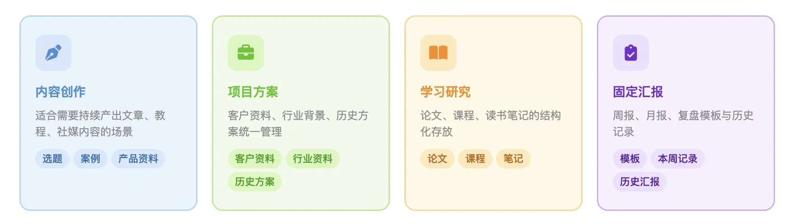
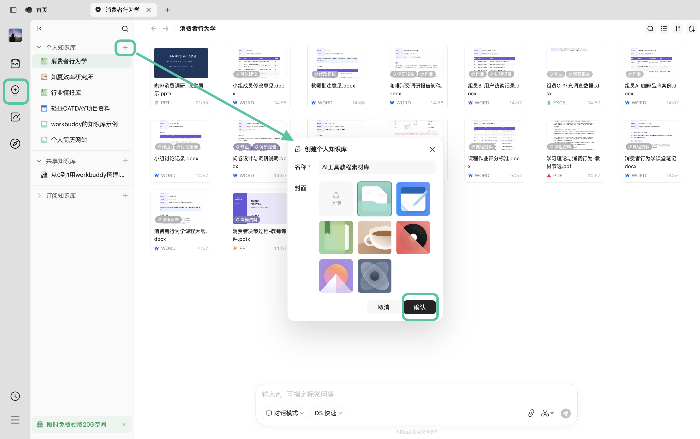
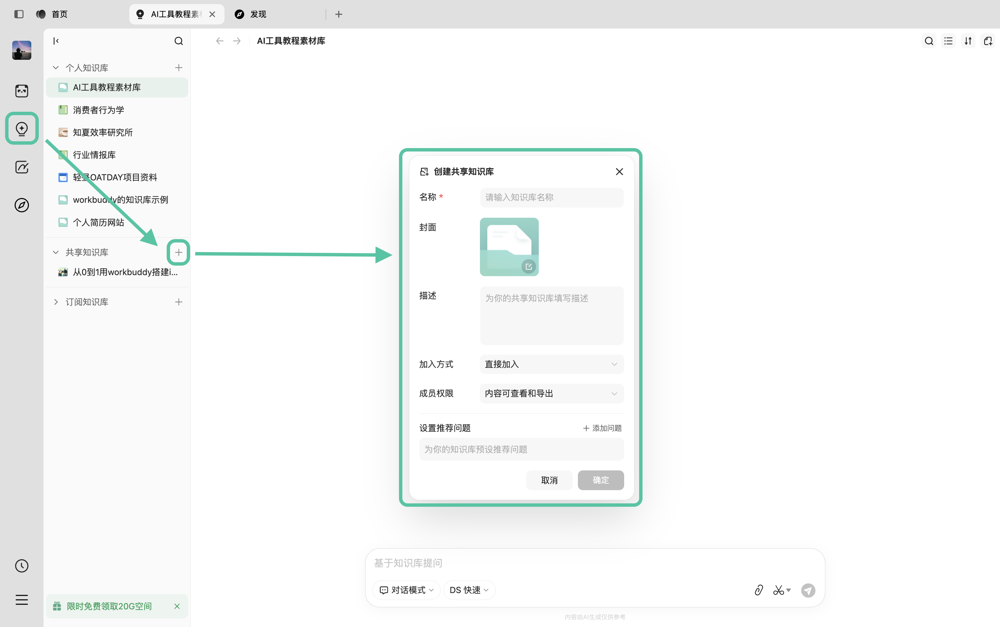
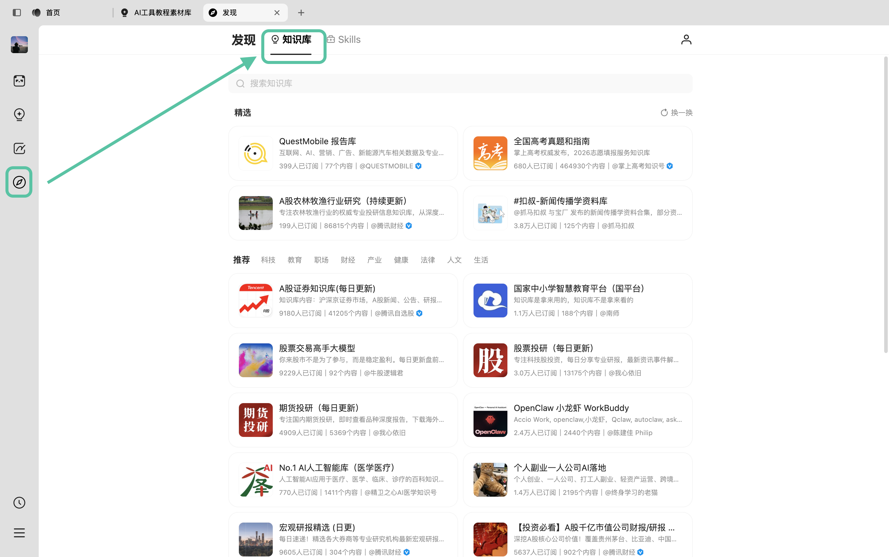
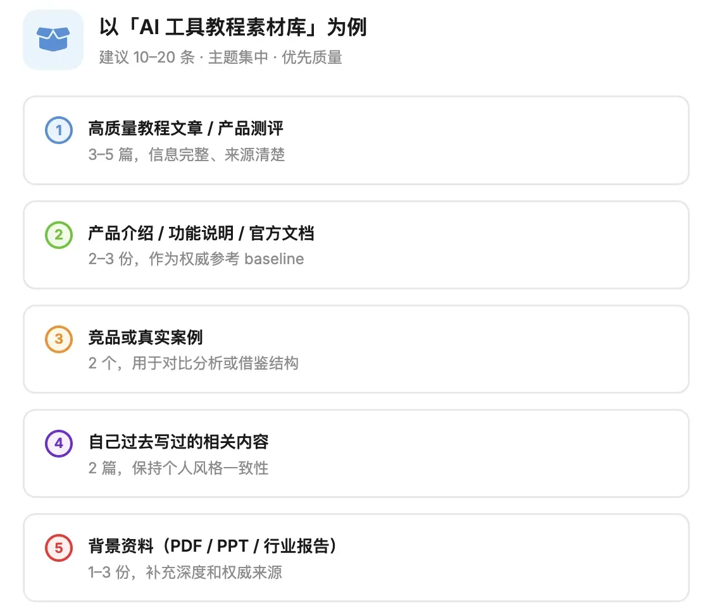
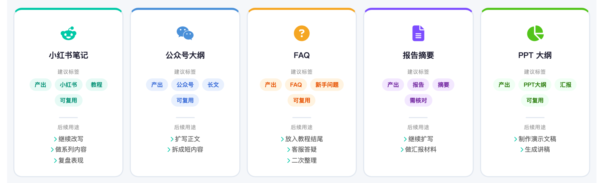
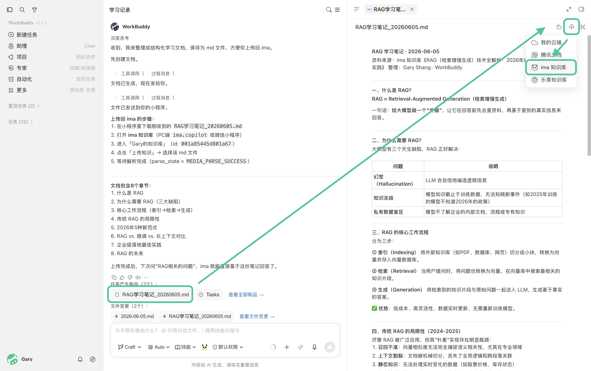
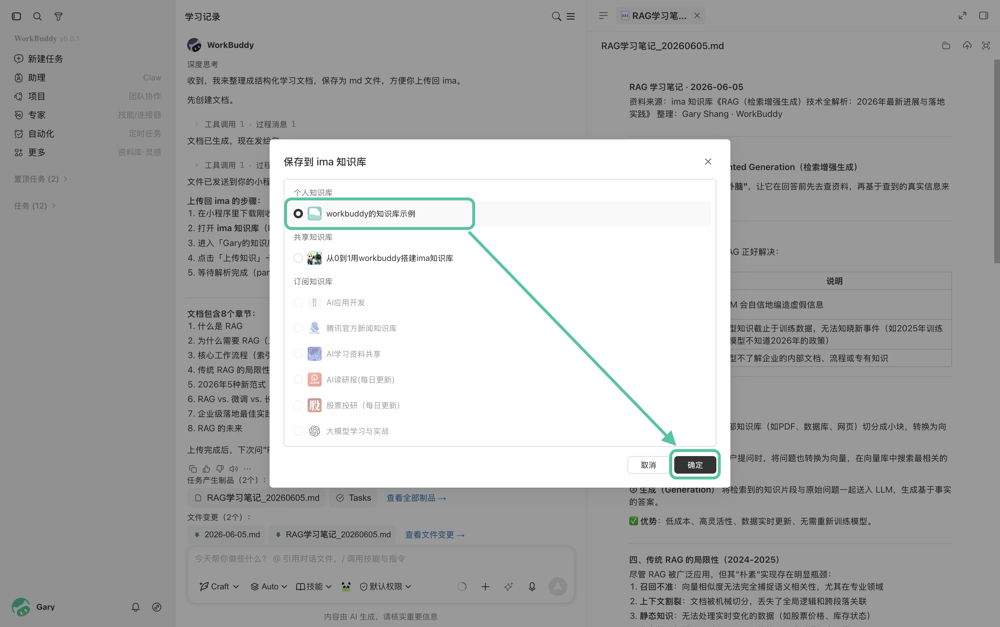

如何用 WorkBuddy 把 ima 知识库越用越厚
本篇目标
- 尝试搭建第一个知识库
- 把有价值的产出回传 ima，形成知识复利
一、按任务目标建立主题知识库
新手不要一开始建立一个"大而全"的知识库，比如"我的资料库"或"AI 资料库"。
这种知识库短期方便，长期很容易变乱。
更推荐按照任务目标建立主题知识库。也就是说，先想清楚这个知识库未来要服务什么任务。

建议先从一个近期明确要完成的任务开始。例如，本周需要制作 AI 工具教程，就可以先准备一个"AI 工具教程素材库"。
另外还有两种知识库类型可以根据需要选择：
如果需要和其他人共用知识库，可以建立共享知识库。
也可以在发现中，寻找合适的知识库，直接订阅。
创建个人知识库

创建共享知识库

订阅知识库

二、准备第一批资料
第一批资料不需要多，建议控制在 10-20 条以内。

选择资料时，优先保留信息完整、来源清楚、近期仍然有效的内容。避免将多个无关主题混在同一个知识库中。
如果自己搜寻资料找到的内容有限，也可以直接在知识库广场订阅知识库、让 WorkBuddy 来搜索合适的资料内容，你再根据个人的偏好，选择内容放入 ima 中。
三、让知识库持续增值
除了最初准备的原始资料，WorkBuddy 生成的正式内容也应该保存回 ima，成为新的知识资产。
例如：基于当前知识库生成的小红书笔记、公众号大纲、FAQ、报告摘要、PPT 大纲——只要这些内容后续还有复用价值，就可以回传到 ima，方便后续继续调用。

请基于当前生成内容，帮我整理一份回传 ima 的保存建议。请输出：建议标题、建议保存到哪个知识库、后续可复用场景、是否需要人工核对。
回传 ima 操作步骤
- 在 WorkBuddy 中打开生成内容，点击产物区域的上传到云端。
- 选择 ima 知识库。

- 保存到对应主题知识库。
